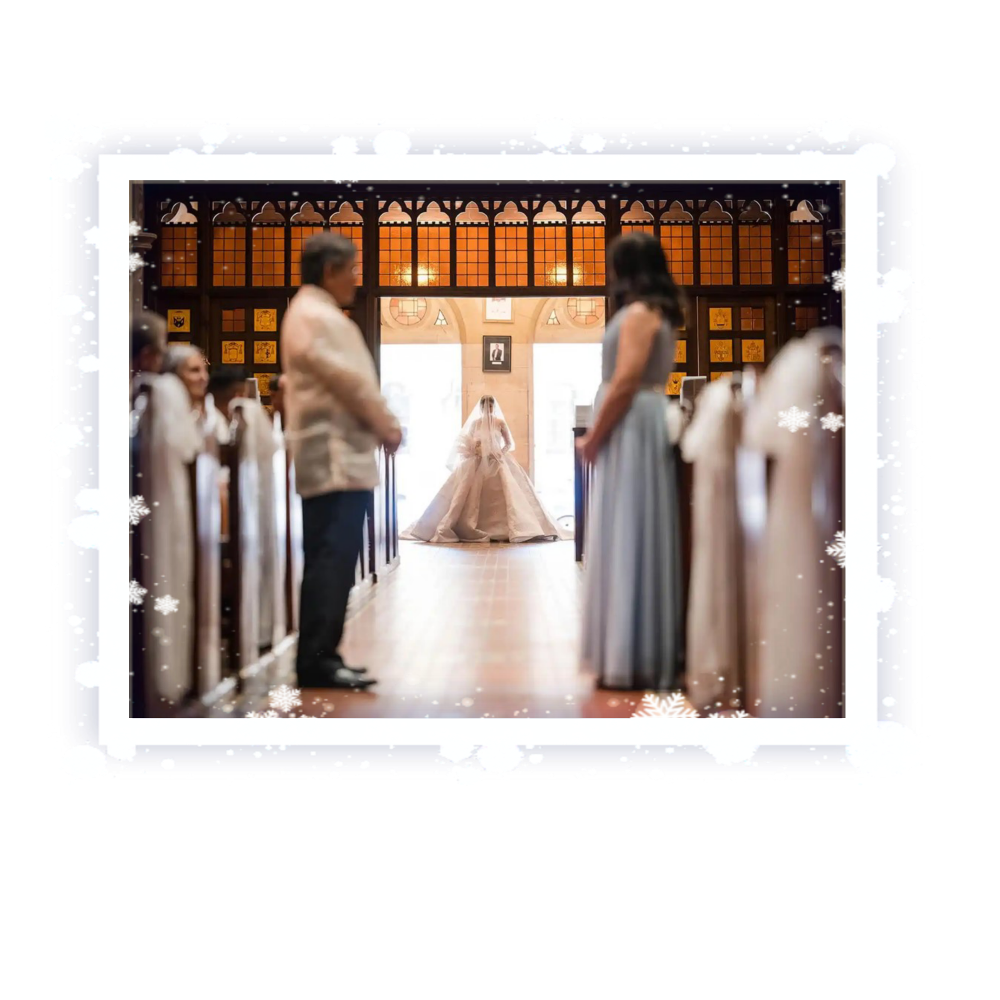
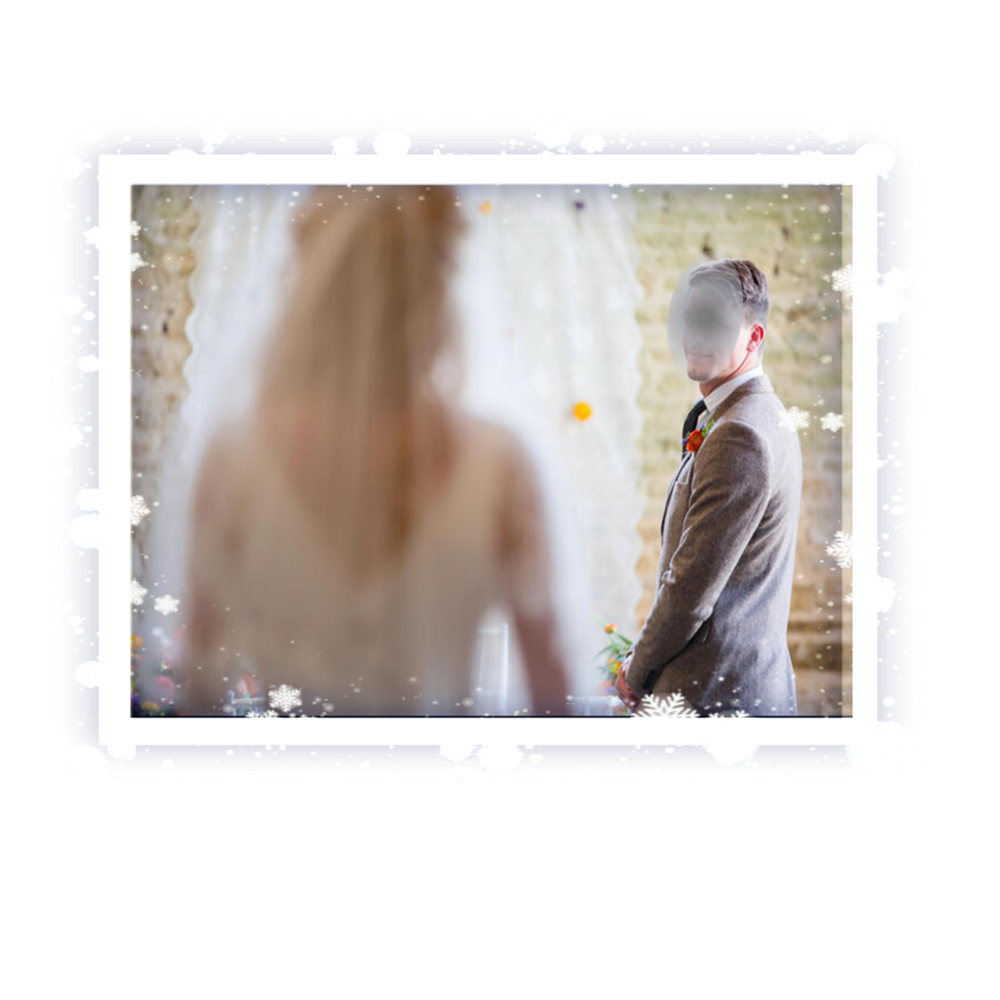
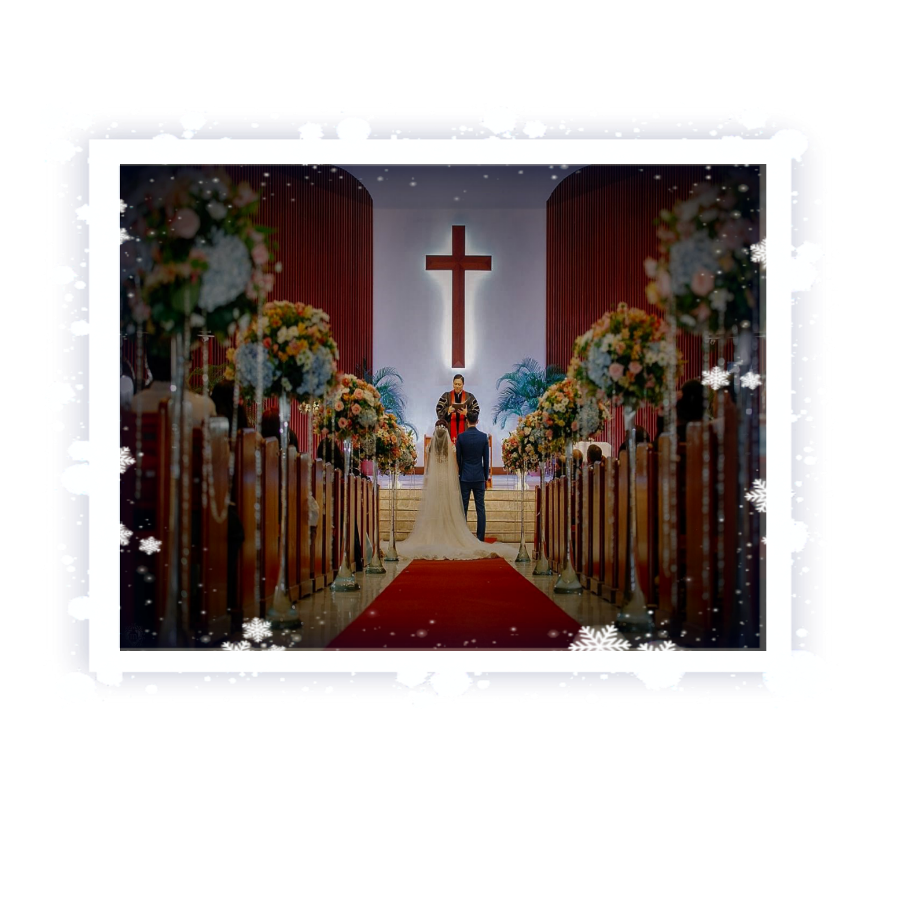

Wedding Ceremony
As the organist began to play Palagi by TJ Monderde, the massive wooden doors at the back of the church swung open, revealing the bride. Angel stood at the threshold, her eyes shimmering with a mixture of anticipation and emotion. Her ivory lace gown trailed behind her, the delicate fabric whispering over the floor as she took her first step down the aisle.
At the other end of the aisle, Kenneth stood tall, his hands clasped together in nervous excitement. His heart raced with each of Angel’s steps, the reality of the moment sinking in. He wore a classic white tuxedo, perfectly tailored, and a single white rose pinned to his lapel, echoing the theme of Angel's bouquet. His eyes never left her, captivated by the vision approaching him.

A kindly old priest with eyes that twinkled with joy, welcomed everyone. “Dearly beloved, we are gathered here today to witness and celebrate the union of Angel and Kenneth in marriage. A sacred bond that they shall share for eternity.”
As the priest spoke, the atmosphere in the church shifted. The room seemed to draw closer, enveloped in warmth and love. The light filtering through the stained glass bathed the couple in a heavenly glow, as if blessing them with the hues of their future.
Angel and Kenneth turned to face each other, their hands entwined, forming a bridge between two lives. Angel’s eyes glistened with unshed tears, a testament to the depth of her feelings. She took a steadying breath and began her vows.
“Jan Kenneth Ambrosio,” she started, her voice steady yet tender. "(Bride wedding vows goes here...)"
“Angel Regalado, you are my light, my inspiration, and my heart’s true desire. From this day forward, I vow to cherish you, to laugh with you in times of joy, and comfort you in times of sorrow. I promise to build a life with you filled with love, adventure, and understanding. You are my everything, and I will love you until the end of my days.”
The priest nodded approvingly, his heart full as he gestured for the rings. The best man stepped forward, handing Ethan the simple gold band that symbolized their eternal bond.
“With this ring, I thee wed,” Kenneth said, slipping it onto Angel’s finger. The ring glimmered in the light, a perfect circle with no beginning and no end.
Angel repeated the gesture, her hands steady as she placed the matching band onto Kenneth’s finger. “With this ring, I thee wed,” she echoed, sealing their vows with a promise that transcended words.

The priest raised his hands in blessing, his voice resonating through the cathedral. “By the power vested in me, I now pronounce you husband and wife. You may kiss the bride.”
A murmur of joy swept through the congregation as Kenneth lifted Angel’s veil, revealing her full beauty for the first time. He cupped her face gently and leaned in, their lips meeting in a kiss that spoke of promises fulfilled and a future yet to unfold.
The applause was thunderous, a joyful acknowledgment of the love that had united two hearts. Angel and Kenneth turned to face their family and friends, now joined as one. They walked down the aisle together, hand in hand, stepping into a new chapter of their lives as husband and wife.